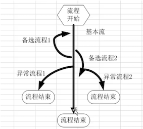

场景法
1. 概述
1.1 为什么使用场景法设计测试用例
大多数业务软件由后台管理（比如：用户管理、角色管理、权限管理等等各种管理）和工作流等几个部分组成。终端用户，期望软件能够实现业务需求，而不是简单的功能的组合。对于单点功能利用等价类、边界值、判定表用例设计方法能够解决大部分问题。涉及业务流程的软件系统，采用场景法比较合适。
总之, 对于多个功能组合测试的场景适合使用场景法, 所以场景测试,也是业务场景组合测试.
1.2 概念

场景业务流通常分为: 基本流、备选流、异常流程
(1) 基本流
基本流表示通过业务流程时输入都正确，能达到目标的流程
(2) 备选流
备选流表示通过业务流程时输入错误（或者操作错误）导致流程存在反复，但是经过纠正后仍能达到能达到目标的流程.（插卡-->输入错误密码--》输入正确密码--》输入金额--》取款--》取卡）
(3) 异常流
异常流表示通过业务流程时输入错误（或者操作错误）产生异常终止流程
2. 使用场景法设计测试用例
1. 步骤
- 分析需求,确定基本流程、备选流程、异常流程
- 绘制流程图,确定流程路径, 根据流程图生成不同的场景
- 每一个场景就是一条测试用例
2. 案例
2.1 需求描述
用户网上购买商品, 整个订购过程为：用户登录到网站后，进行书籍的选择，当选好自己心仪的书籍后进行订购，这时把所需图书放进购物车，等进行结帐的时候，用户需要登录自己注册的帐号，登录成功后，进行结帐并生成订单，整个购物过程结束。
2.2 测试用例实现
(1). 分蓄需求,确定业务流程(基本流程、备选流程、异常流程)
| 基本流程 | 用户登录到网站，书籍的选择，进行订购，把所需图书放进购物车，等进行结帐的时候，登录自己的帐号，登录成功后，生成订单. |
|---|---|
| 备选流程1 | 账号不存在 |
| 备选流程2 | 账号错误 |
| 备选流程3 | 密码错误 |
| 备选流程4 | 没有选购书籍 |
| 备选流程5 | 退出系统 |
(2). 绘制流程图,确定流程路径, 根据流程图生成不同的场景
| 场景1-购物成功 | 基本流程 | |
|---|---|---|
| 场景2-账号不存在 | 基本流程 | 备选流程1 |
| 场景3-账号错误 | 基本流程 | 备选流程2 |
| 场景4-密码错误 | 基本流程 | 备选流程3 |
| 场景5-没有选购书籍 | 基本流程 | 备选流程4 |
(3). 编写测试用例, 对于每一个场景都需要确定测试用例。
| 测试用例编号 | 输入条件 | 账号 | 密码 | 是否选购书籍 | 预期结果 |
|---|---|---|---|---|---|
| ST-系统测试子项-1 | 场景1 | 张三 | admin@123 | Y | 购物成功 |
| ST-系统测试子项-2 | 场景2 | 李四 | N | N | 提示账号不存在 |
| ST-系统测试子项-3 | 场景3 | 赵六 | admin | N | 提示账号错误, 返回基本流程 |
| ST-系统测试子项-4 | 场景4 | 张三 | Admin123&…… | N | 提示密码错误,返回基本流程 |
| ST-系统测试子项-5 | 场景5 | 张三 | admin@123 | N | 提示没有选购书籍, 返回基本流程 |
3. 小结
场景流程比较适合于涉及到业务需求的场景, 能够多个功能联合进行测试,不是单个功能进行测试.